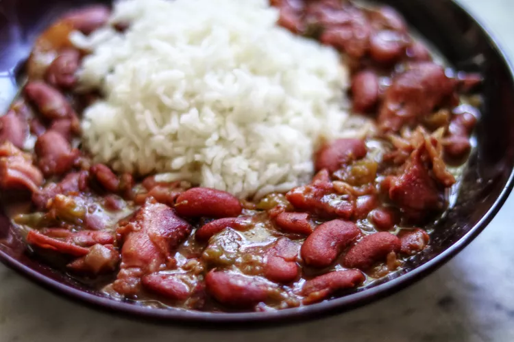

Instant Pot NOLA Red Beans and Rice

Description
This Instant Pot rice and beans made with pork neck bones has been converted from a family recipe that we've used for 40+ years. Our family had come across it while in New Orleans when I was a little girl. From what I remember, red beans and rice were always made at home on Mondays using leftover pork bones from the weekend meals. It's deliciously flavorful and can be made as spicy as you'd like. I hope you love it as much as my own family does.
Ingredients
- 1 tablespoon olive oil
- 1 pound pork neck bones
- 4 slices bacon, diced
- 1 green pepper, diced
- 2 stalks celery, diced
- 1/2 medium onion, diced
- 2 teaspoons ground white pepper
- 2 teaspoons ground thyme
- 1 ½ teaspoons garlic powder
- 1 ½ teaspoons dried oregano
- 1 teaspoon ground cayenne pepper
- 1 teaspoon Cajun or Creole seasoning
- 1/2 teaspoon black pepper
- 3 cloves garlic, minced
- 1 pound dry red kidney beans, sorted and rinsed
- 4 cups chicken broth
- 5 bay leaves
- 1 teaspoon salt
- 4 cups hot cooked white rice, or as needed
Steps
- Turn on a multifunctional pressure cooker, such as Instant Pot, and select the Sauté function. Add olive oil. Add bacon and pork neck bones to hot oil. Cook until browned on both sides, 5 to 7 minutes. Remove meat and set aside. Add bell pepper, celery, and onion; cook and stir for 1 to 2 minutes. Season with white pepper, thyme, garlic powder, oregano, cayenne pepper, Cajun seasoning, and black pepper. Mix in garlic and continue cooking until onion is translucent, 2 to 3 minutes.
- Mix kidney beans, chicken broth, salt, and bay leaves into vegetables in the pot; stir well to combine. Cancel Sauté mode and return meat to the pot. Close and lock the lid. Set vent to Sealing. Select High pressure, according to the manufacturer's instructions. Set timer for 60 minutes. Allow 10 to 15 minutes for pressure to build.
- Release pressure using the natural-release method, according to the manufacturer's instructions, about 10 minutes. Move the valve to the venting position and finish releasing pressure, about 5 minutes. Unlock and remove the lid.